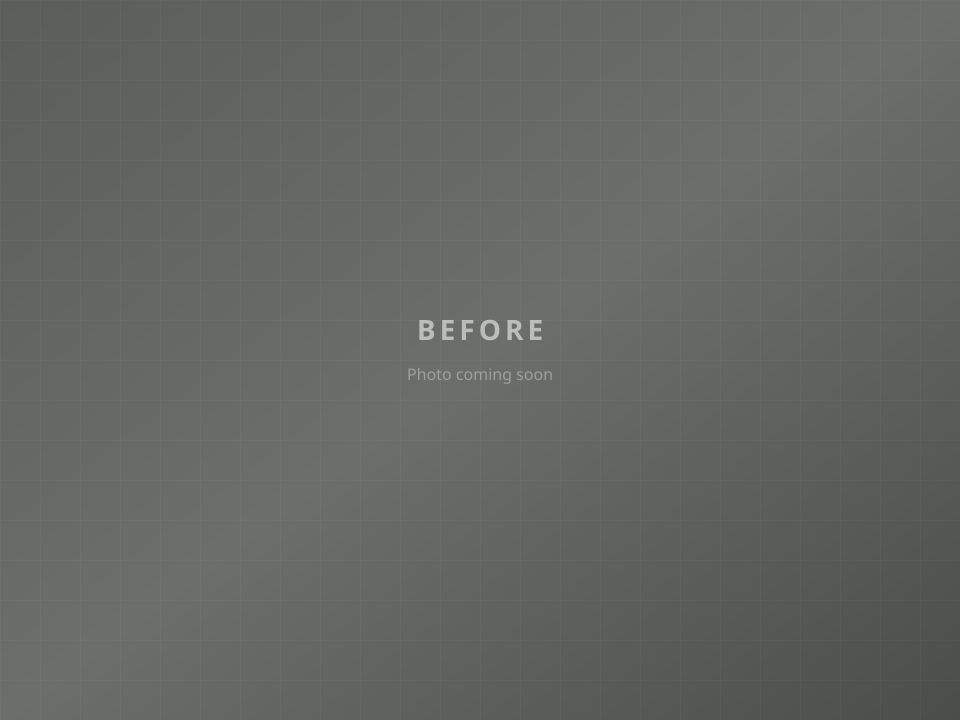
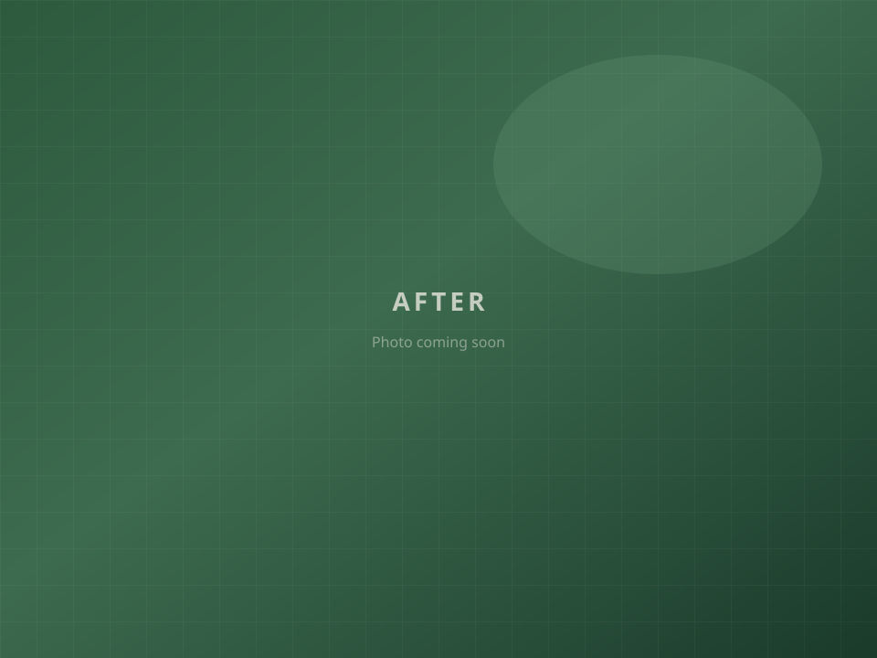

Before AfterA Plus LTD
Driveways & Landscapes
Customisable outdoor solutions across Luton and the surrounding area.
Outdoor spaces, done properly
A patio may sit at the base of a deck, off a back door, or be designed to fit anywhere on the property. Attractive walkways, matching driveways and planting create outdoor spaces that feel comfortable, private and lasting.
What we do
Our skilled team specialises in driveways, patios, paving, fencing and landscaping — high-quality work at competitive prices, with customer satisfaction at the centre.
Inviting outdoor living spaces in natural stone, pavers or concrete, tailored to how you use your garden.
Durable, well-finished surfaces that lift curb appeal — from classic paving to decorative concrete.
Structural and decorative walls that define spaces, add privacy and frame planting and paths.
Timber, metal and low-maintenance options installed with precision for privacy and security.
Site preparation and quality turf for a healthy lawn you can enjoy year-round.
From concept to installation — hardscaping, planting and outdoor design that works as one.
Why choose us
A Plus Driveways & Landscapes Ltd specialises in high-quality driveway and patio services. These are the standards that set our work apart.
Skilled, experienced professionals dedicated to delivering projects on time and within budget.
Durable materials including concrete, asphalt, brick and stone — chosen to last.
From design through finishing touches, we take pride in exceeding expectations.
We listen closely and work with you so the finished result matches what you need.
Recent work
Drag the slider on each project to compare. Click a project name on the Projects page for more photos.


Before AfterContact A Plus Driveways & Landscapes Ltd by phone, email or our online form for a friendly chat about your project.